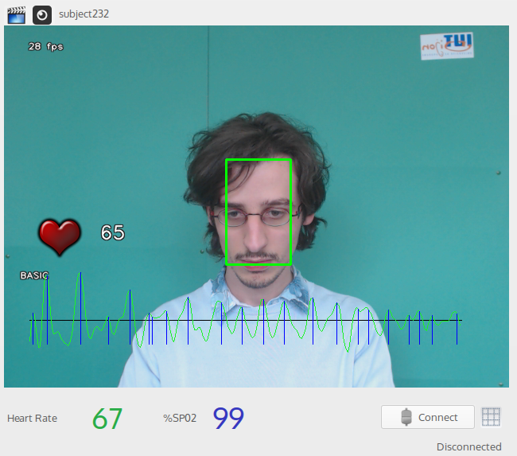

Non-contact Physiological Signs Measurements using Remote Photoplethysmography
Richard Macwan
Supervisors: Yannick Benezeth, Alamin Mansuri
Le2i, Department of Computer Science and Engineering
Université de Bourgogne
Outline
- Introduction
- Methodology
- Experimental setup
- Results and analysis
- Conclusions and future work
- References
Introduction
- Heart rate is one of the most significant physiological signs
- Continuous non-contact measurements of heart rate are highly desirable
- Monitoring infants and old patients
- Patients with severe physical trauma
- Fitness based scenarios
Introduction
- Contact based devices are inconvenient and sometimes infeasible. Typical examples are:
| Heart rate monitors | Electrocardiograms | Pulse oximeters |
Introduction
- Objectives
- Build a proof of concept system to implement state of the art techniques in remote photoplethysmography
- Evaluate the system and enhance it to build a production grade application
Introduction
- Pulse oximeters use photoplethysmography to measure heart rate using a dedicated red and/or infra red light source
Introduction
- Photoplethysmography : A low cost optical technique to detect blood volume changes in the microvascular bed of tissue
- Rhythmic pumping by the heart results in regular variations in the blood volume in the skin tissue
- Video cameras can be used to detect these variations in the skin manifested as minute changes in the color content
Remote Photoplethysmography (RPPG)

Outline
- Introduction
- Methodology
- Experimental setup
- Results and analysis
- Conclusions and future work
- References
Methods
- Three methods were implemented:
- BASIC
- CHROM
- ICA_RGB
BASIC method
- Based on Verkruysse's method
- Green channel has the strongest RPPG signal
- Blue and red channel also photoplethysmographic signal, albeit, to a lesser extent
BASIC method
- Another study, by Wu et. al., used restrictive temporal filtering to amplify color variations and low amilitude motion
BASIC method
- RPPG signal obtained by using spatial averaging over a gaussian pyramid of images of the skin region of the frames
BASIC method
- Extract RPPG sensors
- Face/Skin detection
- Face detection using Viola-Jones detector
- Skin detection using an enhanced skin color classifier based on RGB ratio model proposed by Osman
Skin detection
- A pixel is classified as a skin pixel if
- $R \gt 95 , G \gt 40 $ and $ B \gt 20 $
- $ max(R, G, B) − min(R, G, B) \gt 15 $
- $ |R − G| \gt 15 $ and
- $ R \gt G, R \gt B $
Skin detection
Skin detection
Image pyramids
- Downsampling with 3 iterations using a Gaussian kernal
| \[ G_{i}=\frac{1}{256}\begin{bmatrix}1 & 4 & 6 & 4 & 1\\ 4 & 16 & 24 & 16 & 4\\ 6 & 24 & 36 & 24 & 6\\ 4 & 16 & 24 & 16 & 4\\ 1 & 4 & 6 & 4 & 1 \end{bmatrix} \] |
- Scaled space representation using image pyramids
Extract the RPPG signal
- Spatial averaging over the skin ROI
- Three signal values per frame
- Temporally concatenated to build up a signal
Post-processing
- Detrending
- Temporal Filtering
Detrending
- The temporal signal might exhibit slow linear or more complex trends
- Results in distortions in time and frequency analysis
Detrending
- Method based on smoothness priors proposed by Karjalainen et. al. specifically for use in heart rate variability analysis
- Let the RPPG signal be denoted by \begin{equation} z=(r_{1},r_{2}...r_{n})^{T}, \end{equation} where n=300 is the number of frames in our temporal window and $r_{i}$ are the signal values
- Each trace can be considered to be composed of a nearly stationary component, $z_{stat}$ and a low frequency aperiodic component, $z_{trend}$ \begin{equation} z=z_{stat}+z_{trend} \end{equation}
Detrending
- The trend component can be linearly modeled as \begin{equation} z_{trend}=H\theta+v \end{equation} where $H\in\mathbb{R}^{(n-1)\times M}$ is the observation matrix, $\theta\in\mathbb{R}^{M}$ are the regression parameters and $v$ is the observation error.
- Optimization task is to estimate $z_{trend}=H\hat{\theta}$ that can be used to estimate the trend
Detrending
- $\hat{\theta}$ is estimated using the generic process of regularized least squares solution \begin{equation} \hat{\theta}_{\lambda}=arg\,\underset{\theta}{min}\{\left\Vert H\theta-z\right\Vert ^{2}+\lambda^{2}\left\Vert D_{d}(H\theta)\right\Vert ^{2}\}\label{eq:regleastsquares} \end{equation} where $\lambda$ is the regularization parameter and $D_{d}$ indicates the discrete approximation of the $d$'th derivative operator.
- The solution is given by \begin{eqnarray} \hat{\theta}_{\lambda} & = & (H^{T}H+\lambda^{2}H^{T}D_{d}^{T}D_{d}H)^{-1}H^{T}z\\ \hat{z}_{trend} & = & H\hat{\theta}_{\lambda} \end{eqnarray} where $\hat{z}_{trend}$is the estimated trend which needs to be removed.
Detrending - before and after
| Before |
| After |
Temporal filtering
- The frequency components falling outside normal heart rates of 0.75 Hz to 4.0 Hz are discarded using a Butterworth bandpass filter
| Before |
| After |
Extracting the heart rate
- Heart rate measured by detecting peaks and estimating the inter-beat intervals (IBIs)
- Peaks are identified as points where the differential changes the sign
- Non-max suppression is also applied
Extracting the heart rate
- IBIs are obtained by difference of timestamps of consecutive peaks
- Peaks are identified as points where the differential changes the sign
Extracting the heart rate
- IBI at time $t_{i+1}$ is given by \begin{eqnarray} IBI_{i} & = & t_{i+1}-t_{i}\\ IBI_{i+1} & = & t_{i+2}-t_{i+1} \end{eqnarray}
Extracting the heart rate
- The heart rate for a given temporal window is then given by \begin{equation} HR=\frac{60000}{\bar{IBI}} \end{equation} where $\bar{IBI}$ is the average inter-beat interval over that window.
CHROM method
- Simplified chrominance based method based on De Haan's CRHOM method
- Similar to BASIC method
- Difference lies in the RPPG signal extraction stage
CHROM method
- The pixels from the skin ROI are projected onto the chrominance plane which is a linear combination of the RGB plane
- RPPG signal is approximated as \begin{equation} S_{n}=1.5R_{n}-3G_{n}+1.5B_{n}\label{eq:CHROMAverage} \end{equation} where $R_{n},\,G_{n},\,B_{n}$ are the RGB value of the $n^{th}$ pixel in the ROI
ICA_RGB method
- Poh et. al. showed that blind source separation on RGB videos can be used to extract a more robust RPPG signal
ICA_RGB method
- Independent component analysis (ICA) is applied to the signal obtained from the BASIC method
- Component selection then needs to be performed since ICA is a blind source separation method
Independent component analysis
- A statistical technique to decompose a multivariate signal into constituent assuming that the underlying signals are uncorrelated
- Used to solve the cocktail party problem
- The FastICA implementation was used
Independent component analysis
- ICA gives the constituent signals as an output but no other information
- We need to select the component that represents the RPPG signal
- The component with the highest power spectral density was chosen as the RPPG signal
The system in action
|  |
The system in action
Outline
- Introduction
- Methodology
- Experimental setup
- Results and analysis
- Conclusions and future work
- References
Experimental setup
- Need for a more rigorous analysis and a corresponding video database for testing the system
Experimental setup
- 47 subjects
- 3 videos per subject for better variability in the data
- Relaxed state heart rate with soothing music
- Elevated heart rate with stressful music and playing a game
- Heart rate measurements with regular movements
- Videos recorded in custom format with ground truth data embedded
Experimental setup
- 24 bit, RGB channels, 8 bits/channel, 30 frames/second
- 70 seconds long video with first 10 seconds discarded to ignore possible noise
- 133 usable videos
Outline
- Introduction
- State of the art
- Methodology
- Experimental setup
- Results and analysis
- Conclusions and future work
- References
Results and analysis
- Evaluation based on window size and RPPG extraction method
- Metrics calculated are
- Normalized root mean square error
- Mean and standard deviation of differences
- Pearson correlation coefficient
- Mean of differences and 95% of agreement($\pm$1.96SD) using Bland-Altman analysis
- Each metric is averaged over all the videos and each metric per video is averaged over the whole temporal signal.
Results - CHROM vs BASIC
Dataset 2Results - CHROM vs BASIC
Dataset 3Results - ICA vs BASIC
Dataset 2Results - ICA vs BASIC
Dataset 3Analysis
- Parameters affecting the quality of the results
- Accuracy of the HR measurement algorithm
- Timing issues
Analysis
- Other parameters affecting the quality of the results
- Window size
- Video dataset
- RPPG extraction method
- ICA implementation
Outline
- Introduction
- Methodology
- Experimental setup
- Results and analysis
- Conclusions and future work
- References
Conclusions and future work
- A proof of concept system for measuring heart rate using remote photoplethysmography was designed and built in C++
- Three methods were tested, BASIC, CHROM and ICA_RGB
- The system has much scope for improvement:
- Improve results of ICA and obtain results at par or better than state of the art
- Improve peak detection and HR calculation
Outline
- Introduction
- Methodology
- Experimental setup
- Results and analysis
- Conclusions and future work
- References